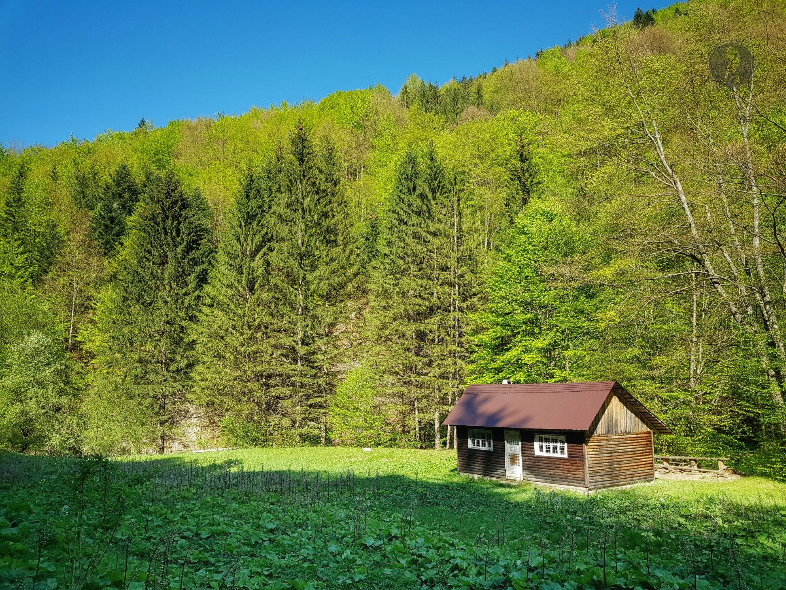
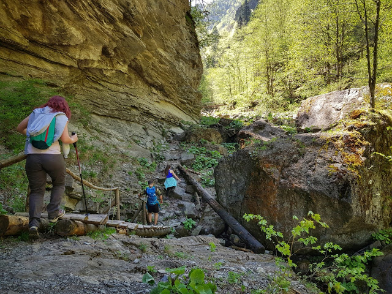
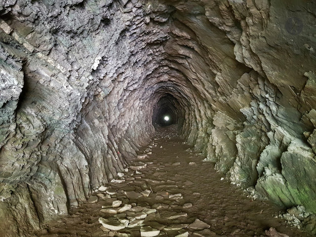

Traseu în Munții Vrancei: Lepșa - Cheile Tișiței - tunelul mare și retur
Traseul nostru face parte dintr-unul mult mai lung ce se parcurge în mai mult de o zi, un traseu istoric care leagă localitatea Lepșa de satul Coza, un drum forestier construit de nemți în timpul celui de-al doilea război mondial ce avea ca scop înlesnirea transportului de lemne între cele două localități. Inițial aici fusese construită o cale ferată forestieră înlocuită ulterior de un drum forestier, după cum se povestește pe plan local.
Urmele acestor intervenții umane sunt încă vizibile sub forma podurilor și tunelelor. De altfel, acestea sunt una dintre principalele atracții ale traseului prin Cheile Tișiței, unde vei trece prin două arcade săpate în piatră și un tunel lung de aproximativ 200 de metri.

Traseul este amenajat, are marcaje suficiente, iar gradul de dificultate este scăzut. Poate deveni alunecos pe vreme umedă, dar este aproape în întregime plat, cu foarte puține mici urcușuri și cu unele podețe și scări din lemn care facilitează trecerea în zonele mai dificile sau peste apă.
